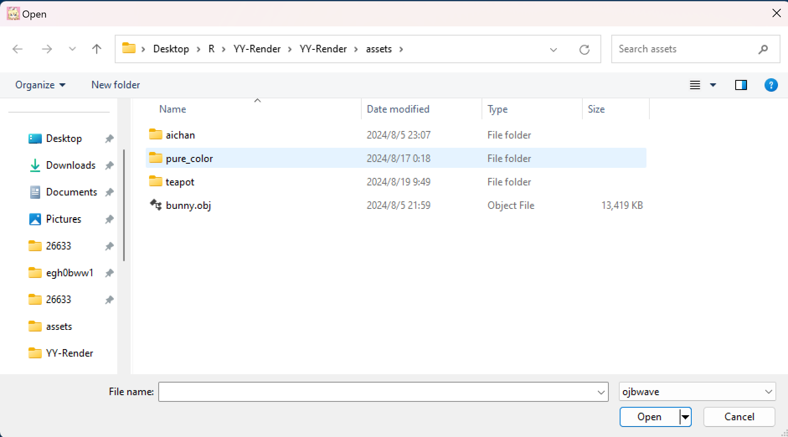
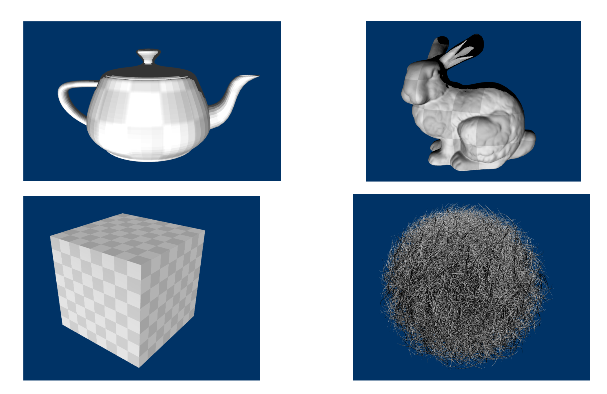

After obtaining the entire project's source code, you can open the entire project in VS2022 by clicking on the SLN file in the project directory. Then, compile the entire project by selecting Build Solution (Ctrl+Shift+B). You can choose to use either the Debug or Release build target. After completing the build, you can start the program by pressing F5 or Ctrl+F5. The screen after launching looks roughly as follows:
On a screen with a 60Hz refresh rate, the average frame rate over this period
will be displayed in the upper left corner of the window after about 10 seconds
(approximately 5 seconds for a 120Hz display). You can rotate the camera around
the character's center by pressing and dragging the left mouse button and zoom
in or out using the mouse scroll wheel. You can return to the initial position
by pressing the ESC key.
In addition to the basic movement methods, you can switch from mouse mode to
keyboard mode by pressing the T key (pressing it again will switch back to
mouse mode). In this mode, you can move forward/left/backward/right using WASD
and adjust the camera view with the arrow keys, where ↑ corresponds to
looking up, ↓ to looking down, ← to looking left, and → to looking
right. In this mode, the operation is similar to the free view in some
first-person shooter games after death, except that view adjustment is done
using the arrow keys instead of the mouse.
It is important to note that the mouse control and keyboard control use
completely separate transformation matrix parameters, so switching modes with
T will abruptly change the view to the other mode. Pressing ESC will reset
the state of all modes.
(In mouse mode (the default mode), pressing and dragging the right mouse button can also change the view, but it moves slower than the left button, making it suitable for precise operations.)
You can use H and L to rotate the light clockwise or counterclockwise; you
can use J and K to move the light source direction up or down.
You can render a new OBJ model by selecting and opening an OBJ file through the
Load option in the application menu bar. Below is a schematic of the
interface, along with some example models:
|  |  |
If the file opened is not an OBJ file or contains errors, yy-render will display a MessageBox with detailed error information.
I have provided some OBJ models in the Models directory under the source code, which can be used to test the program's functionality.
You can select one of the five Shaders from the Shaders option in the
application's menu bar, each of which achieves a different effect: using normal
vectors as color, using the map_Kd material as color, using the map_Ke material
as color, using Ka, Kd, Ks with the Phong lighting model, and finally, a Shader
that implements ShadowMap. The menu contents and the different effects are shown
in the images below:
When an OBJ model does not have a material, yy-render provides a default
texture, which comes from the teapot in the McGuire Computer Graphics
Archive. You can choose to use or not use the default texture through the use
default diffuse texture option in the Options dropdown menu in the menu bar:
This option is only applicable for the last two Shaders.
This section introduces the structure of the entire yy-render codebase and explains some implementation details, aiming to assist those who read the code.
The yy-render solution consists of three projects: the OBJ loading module yyobj, the yyobj_test project for testing yyobj, and the application project YY-Render that utilizes yyobj. Their directory structure is shown in the image below:
- The yyobj project's main function is to read the contents of OBJ files and MTL files and convert them into data structures that can be directly used.
- The yyobj_test project conducts unit tests on yyobj and tests the reading using existing OBJ models.
- The YY-Render project implements the yy-render application. Its main functions include the implementation of the window, the implementation of the camera, and the calls to the DX12 API.
For parsing OBJ files, we could consider using a dedicated parser generator to
create parsers for OBJ and MTL files. However, since the format of OBJ files is
very simple and there are only a few context-sensitive keywords in the parsing
process, such as g, o, and s, implementing an OBJ loader from scratch is
not very difficult. However, achieving efficiency, error-friendliness, and
comprehensive features is not an easy task, which means we need extensive
testing, writing low-level code, and studying the standard documentation for the
files.
When I started the implementation, I referred to Bly7/OBJ-Loader, which uses
std::string and fstream for string processing and file I/O. Its
implementation is very straightforward, but the downside is its low
performance. This is mainly because it processes the contents of OBJ files line
by line, and the short context leads to overly frequent function calls,
resulting in significant performance overhead. In Debug mode, where functions
are not inlined, there is about a tenfold performance difference between Debug
and Release. thisistherk/fast_obj reads a large chunk of file content at once
and processes it byte-by-byte using pointer operations, greatly reducing
function call overhead. guybrush77/rapidobj even implements multithreaded
reading, achieving several times the performance improvement over
fast_obj. However, its code is much more complex than that of fast_obj, making
it not an easy learning target.
In a sense, my implementation of yyobj is a hybrid of the three: I borrowed the data structures from fast_obj, the error handling and polygon-to-triangle splitting algorithm from rapidobj, and the normal vector generation method from OBJ-Loader. The proportions of these three components might be around 85%, 10%, and 5%, respectively.
yyobj supports only a portion of the OBJ standard. It does not support keywords
such as l, curv, curv2, surf, etc., and it also does not support the -
options in MTL files, such as -o, -s, and so on.
As we know, standalone vertex data comes in three types, which are v, vt,
and vn, representing position, texture coordinates, and normal vectors,
respectively. Since they appear sequentially in OBJ files as line items, using
std::vector<float> as the container for these points is very suitable.
The f keyword can combine different types of vertex data to form faces, and
the number of vertices per face is at least 3. Since the number of vertices per
face is not fixed, we could consider using a structure like
std::vector<std::vector<VertexIndex>> to store them. However, this is not
contiguous and is therefore not cache-friendly. A more reasonable data structure
is to construct an array with each vertex in f as a unit and then use a
faces-vs array to record the number of vertices per face:
When handling the two grouping keywords g and o, we can record their
starting positions and the total number of faces in the f vector and the
faces-vs vector to mark their scope. Since this task hardly involves
operations related to grouping, we don't need to focus too much on the grouping
of o and g but rather on the material partitioning of usemtl. usemtl can
be recorded in the same way as o and g, and its record is actually the most
useful part: it can be used to determine the vertex group information with
different materials when rendering vertices.
For materials, we can use a single vector to record textures and store the offset of the texture vector in the material's corresponding data structure. This way, multiple materials can share the same texture, avoiding redundant texture loading and saving space.
In the yyobj project, the definitions of the data structures are located in the ObjWave.h header file.
Since OBJ files are line-based and the context is very simple, we dispatch the remaining parsing functions to specialized functions based on the keyword obtained from the beginning of the line. These functions take a starting pointer, process the parsing task corresponding to the keyword, and then move the pointer to the end, serving as the starting position for the next parsing task. All line-by-line parsing functions have the following signature:
Among these functions, parse_buffer is responsible for dispatching; it
allocates tasks to different functions like parse_vertex based on the keyword
at the beginning of the line. parse_buffer itself is a massive switch-case
structure.
Since most of the parsing work for OBJ involves converting strings to
floating-point numbers of type float, improving the efficiency of this part is
crucial for overall efficiency. C++ itself provides functions like std::atof
and strtof. While reading the rapidobj source code, I found that it uses
fastfloat/fast_float to parse floating-point number strings. According to the
project's README, it offers a 4 to 10 times performance improvement over the
standard library. Based on my personal tests, fast_float is about twice as
fast as strtof, and I used it in yyobj to parse floating-point numbers.
fast_obj is the fastest single-threaded parser. It also compiles pretty much anywhere (any C compiler would do), but also has the least amount of features. However, I could make it crash on syntax it does not support (\ line continuation); it might be the least robust of the parsers.
https://aras-p.info/blog/2022/05/14/comparing-obj-parse-libraries/
What if an error occurs during parsing? The approach of fast_obj is to ignore it
as much as possible or crash outright. rapidobj uses error codes to capture
possible errors during parsing and retains context information about where the
error occurred. yyobj follows the approach of rapidobj by assigning a unique
error code to all possible error locations. When an error occurs, the library
user can quickly locate and fix the error based on the error message
corresponding to the error code and the contextual information containing the
line number and the current line's string. You can check the enumeration class
yyobj_errc and the Error structure in ObjWave.h to understand the
definitions related to error handling. Below is a partial implementation of
parse_vertex, which returns the ParseFloatError error code when a
floating-point parsing error occurs. This error is noticed by parse_buffer,
and the current context information is recorded:
Due to the additional error-handling code, yyobj is only half as fast as fast_obj, but it is still sufficiently fast.
On Windows, the character type wchar_t has a length of 2, which can
accommodate a UTF-16 encoded character of length 2. However, UTF-8 encoding is
currently more popular. yyobj assumes that the files being read are UTF-8
encoded. In the Win32 API, functions ending with A indicate that they accept
traditional ASCII strings, while functions ending with W indicate that they
accept wide strings using UTF-16 — at least, that's what is written in the book
Programming Windows. However, the situation seems to have changed
recently. Microsoft has extended functions ending with A to accept UTF-8
strings, thereby providing system-level UTF-8 support (for more details, please
refer to Use UTF-8 code pages in Windows apps). In Windows 10, UTF-8 encoding
can be enabled globally through system locale settings, but we can also apply
UTF-8 encoding to a single application using a manifest.xml description
file. YY-Render uses manifest.xml to enable UTF-8.
<?xml version="1.0" encoding="UTF-8" standalone="yes"?>
<assembly manifestVersion="1.0" xmlns="urn:schemas-microsoft-com:asm.v1">
<assemblyIdentity type="win32" name="..." version="6.0.0.0"/>
<application>
<windowsSettings>
<activeCodePage>UTF-8</activeCodePage>
</windowsSettings>
</application>
</assembly>In this case, as long as the source code uses UTF-8 encoding, string literals within the code will also be UTF-8 encoded, making such strings convenient to use as file paths.
OBJ files allow faces with more than three vertices to be specified using the
f keyword. We can split this face into multiple triangles for consistent
rendering. If the polygon is convex, it can be divided in a very straightforward
manner, but if it is not, things get a bit tricky:
If the polygon is convex, we can simply split it as shown on the left side of
the above image, such as 012, 023, 034, and so on. However, this approach does
not work for concave polygons. rapidobj uses a very clever method: it connects
two non-adjacent vertices pairwise and calculates the lengths of these two line
segments. If the line segment corresponding to the initial point 0 of the
triangle is longer, it indicates that the initial point should be changed to any
point on the other diagonal. In this case, the order will not be 012, 023 but
rather 013, 123.
For polygons with more sides, rapidobj provides a general solution. However, in my implementation, I used a simpler approach: I assume that polygons with more than four sides are convex. Since I have never encountered polygons with more than four sides in OBJ files, this should be harmless.
The polygon splitting implementation in yyobj is located in the function
Obj2Data, which can be found at line 1243 in ObjWave.cpp.
To verify the correctness of my yyobj implementation, I wrote some unit tests
for most of the important parsing functions in the test project yyobj_test. You
can open the test dialog and run all tests using Ctrl e t:
In this task, the code lines for yyobj and yyobj_test together account for about half of the total lines of code, while the remaining half generally consists of the DX12 implementation of a renderer that is not dependent on a specific model. This part can be further subdivided into the following components:
- Window handling code, which processes mouse and keyboard messages
- Timer code, simulating the flow of time
- Texture loading code, obtaining textures that can be loaded into the GPU from images of different formats
- Camera code, obtaining view transformation and projection transformation matrices, and moving the camera in space
- Rendering code, binding resources, and completing rendering
Among these components, the rendering part is more complex, and I will provide a more detailed introduction. Since my understanding of DX12 is still quite basic, the code might have a high degree of coupling.
The implementation of the window creation and window message handling functions
is located in W32.h and W32.cpp, which include the window initialization and
message loop code. Here, I expose the interface functions for message handling
through the class W32Handler. Subclasses can override these interfaces to
handle mouse and keyboard messages for the window:

Apart from the interface class W32Handler, the remaining implementation of
W32.cpp comes from D3D12DynamicIndexing. An interesting aspect of this
implementation is that it continuously calls the callback function by using
PeekMessage and not handling the WM_PAINT message in the message callback,
thereby achieving the effect of continuously refreshing the window and
rendering. However, this approach prevents us from creating modal child windows
(for details, refer to Message Box is not working inside WM_COMMAND!). To
address this, when creating a modal dialog, the callback function processes the
WM_PAINT message by passing it to DefWindowProc to handle the WM_PAINT, and then
InvalidRect is called after the modal dialog ends to regenerate WM_PAINT,
allowing the window to continue refreshing. For the specific implementation,
refer to RunWithModal in W32.h and the WM_PAINT message handling in the
callback function in W32.cpp.
W32Handler is inherited by Framework in Framework.h. This subclass
implements several convenient functions, such as obtaining the application
directory to locate resources, creating the HardwareAdapter, and setting the
window title.
If we assume that the time interval between every two consecutive WM_PAINT messages is equal, then the interval between each frame is a constant value. If the screen refresh rate is assumed to be 60Hz, the interval would be 16.67ms. However, since the interval between frames cannot be a constant, we need a timer to calculate the time difference between two frames to represent the actual time elapsed.
Similarly, yy-render uses the timer from D3D12DynamicIndexing, which internally
uses QueryPerformanceCounter and QueryPerformanceFrequency (from profileapi)
to obtain high-precision time.
The basic camera code is also derived from the SimpleCamera in
D3D12DynamicIndexing, but I made some modifications and improvements based on
it. The original camera only supported keyboard operations and could only move
within the y=0 plane. I improved it to allow movement along the y axis (up
and down) while moving forward/backward (W/S) based on the current pitch
angle. Additionally, I added mouse support to allow the camera to rotate around
the origin of the world coordinate system to change the view by dragging the
mouse. Keyboard movement and mouse movement are separate; here, I first
introduce the keyboard movement method.
In the world coordinate system, the camera's position can be represented using
DX12's XMFLOAT3. Its orientation can be measured using two angle values: the
yaw angle around the y-axis relative to the z-axis, and the pitch angle relative
to the xz-plane. As shown in the diagram below:
In the camera space, we can move forward, backward, left, and right in the
y'=0 plane using WASD. We only need to use the camera's position and angles to
obtain the displacement in world coordinates based on the displacement in camera
space. This part of the code can be found in the SimpleCamera::Update function
in SimpleCamera.cpp. With XMMatrixLookToRH, we can easily obtain the view
transformation matrix, which is located in the SimpleCamera::GetViewMatrix
function.
The logic for controlling the camera with the mouse is simpler. We also need to
record the yaw angle around the y-axis relative to the z-axis and the pitch
angle relative to the xz-plane. Using these angles and the camera's distance
from the origin, we can determine the camera's position. However, the camera's
orientation is constant, pointing towards the origin of the world coordinates. I
borrowed some code for handling mouse click and drag messages from "Introduction
to 3D Game Programming with DirectX® 12," roughly located on page 263 of the
book. We can obtain the view transformation matrix for mouse mode using
XMMatrixLookAtRH.
I also placed the implementation of the light in the camera since we need to control the direction of parallel light according to the task requirements. Its implementation is very similar to the camera implementation in mouse mode.
Finally, when performing projection transformations, I used the bounding box of
the cube obtained from the model and, during the view transformation, determined
the maximum and minimum depth z coordinates based on the bounding box. These
two coordinates can be used to determine the near and far planes during the
projection transformation.
DirectXTK and DirectXTK12 provide image loading code using WIC, but their excessive wrapping makes them unsuitable for direct use (more accurately, yy-render is too simple and low-level to require such high-level APIs: CreateWICTextureFromFile).
While searching for code examples capable of rendering OBJ models, I found Joon1221/DX12-object-loader, where the code might have been inspired by Frank Luna's work. I made some improvements based on his code to read textures, and the specific implementation can be found in LoadTexture.h and LoadTexture.cpp of YY-Render.
The main implementation of yy-render is located in MyRender.h and MyRender.cpp
of the YY-Render project. In MyRender.h, there is a large subclass MyRender,
which inherits from the Framework class.
MyRender overrides various message-handling methods of the base class
W32Handler and delegates them to the class member m_camera:
MyRender implements its own handling of menu messages in the OnCommand
method in MyRender.cpp. The resource IDs for each menu item come from
Resource.h, where the resource ID generation uses an interesting compile-time
counter rather than __COUNTER__.
The OnInit method of MyRender initializes the necessary resources. It calls
LoadPipeline, LoadAssetsOnce, and LoadAssets; the first two functions
initialize resources unrelated to the OBJ model, while LoadAssets implements
the OBJ data loading functionality.
LoadPipeline performs the following tasks:
- Calls
D3D12CreateDeviceto initialize them_deviceof typeID3D12Device - Checks for MSAA support and stores the result in the
m_useMSAAmember - Creates the swap chain
- Creates the RTV, DSV, and SAMPLER descriptor heaps; note that the heap length for DSV and SAMPLER is set to 2, preparing for the ShadowMap
- If the current device supports MSAA, the number of RTVs will be 3, providing an additional RTV for multi-sampling
LoadAssetsOnce performs the following tasks:
- Creates the RootSignature
- Creates the PipelineState objects containing all 5 Shaders
- Creates the depth stencil view
- Creates the sampler and the Fence
- Creates the menu
The structure of the RootSignature is as follows:
c0 corresponds to the transformation matrices and some option values; refer to
the SceneConstantBuffer structure in MyRender.h for more details. c1
corresponds to the parameters of the MTL material, s0~s8 correspond to all 9
possible textures in the MTL material, t0/t1 correspond to two texture
samplers, with the former sampling regular textures and the latter sampling
ShadowMap depth textures; s9 corresponds to the ShadowMap depth texture.
It is important to note that all PipelineState objects have
FrontCounterClockwise set to true because OBJ models use a right-handed
coordinate system, which has a triangle winding order opposite to the default
left-handed system in DX12. Additionally, I have not modified the default
CULL_MODE.
LoadAssets performs the following tasks:
- Loads the OBJ model resources using
yyobj - Loads texture image resources using
LoadTexture - Creates vertex resources and writes vertex data to the GPU
- Adjusts the model transformation matrix based on the model, providing the bounding box data for the camera
- Updates texture and constant buffer heap descriptors
- Creates constant buffer resources and writes material data to the GPU
- Creates texture resources and writes textures to the GPU
A key aspect here is the fill order of resources in the heap descriptors, which is shown in the following image:
When the window receives a WM_PAINT message, it calls the OnUpdate and
OnPaint methods of the object pointed to by the W32Handler pointer. In the
MyRender class, OnUpdate is implemented to update the data of each member in
the SceneConstBuffer. OnPaint calls PopulateCommandList to populate the
command list. It is important to note the handling of MSAA and ShadowMap
generation in PopulateCommandList. If ShadowMap is being used, the scene is
first rendered using the light as the camera to create a shadow material,
followed by normal rendering. If MSAA is being used, rendering is first done to
a buffer that is not directly presented to the display screen, and then it is
downsampled to the RTV.
The implementations of MSAA and ShadowMap were primarily based on the following references:
yy-render uses 5 shaders:
- normal_color.hlsl: Uses the model's normals as the object's surface color.
- mapKd_color.hlsl: Uses the diffuse map as the color.
- mapKe_color.hlsl: Uses the emissive map as the color.
- KaKdKs.hlsl: Uses the Phong model combined with material parameters to generate color under parallel lighting.
- Final_ShaderMap.hlsl: Adds ShadowMap support on top of the previous shader.
It is important to note that there are some issues with the selection of the bias parameter for the ShadowMap, which might result in less-than-ideal shadow effects.
Currently, yy-render cannot handle transparent objects. It might be worth considering adding Order-Independent Transparency (OIT) support. The following resources might be useful:
- https://webgpu.github.io/webgpu-samples/?sample=a-buffer#translucent.wgsl
- http://www.klayge.org/2013/02/18/%E7%BB%A7%E7%BB%AD%E6%8E%A2%E7%B4%A2oit%EF%BC%9Aadaptive-transparency/
- https://zhuanlan.zhihu.com/p/353940259
- https://www.intel.com/content/www/us/en/developer/articles/technical/oit-approximation-with-pixel-synchronization.html
- https://learn.microsoft.com/en-us/windows/win32/direct3d11/rasterizer-order-views
- https://wlog.flatlib.jp/2015/07/22/n1775/